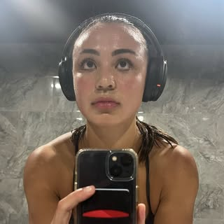
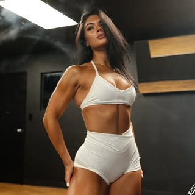

—posts
—followers
—following
Your name
Lifestyle creator
Your public profile becomes the starting point for a sharper commercial story.
creator@ovotalent.comFollowMessage
A creator-specific plan to put positioning, outbound, negotiation and deal operations behind what you already built.
Lifestyle creator


We create a dedicated OVO relationship email, place it cleanly in your profile and route brand conversations into a team that can pitch, negotiate and follow through.
Your live public profile, shown with the OVO contact layer we would set up together.
Your public profile becomes the starting point for a sharper commercial story.
creator@ovotalent.comRepresentation, campaigns and repeat brand collaborations—one OVO team behind the work. Meet three creators inside the network.

Lifestyle & outfits
Co-Owner @maiswimsuits

Strong body, clear mind.
@darcsport 🐺 · @elev8.foods

Jeremiah 29:11 †
@youngla · code: CORTEZ
Recent content gives OVO a concrete pitch angle.
We package the strongest repeatable audience signal.
The best content becomes evidence, not decoration.
Public Instagram followers available for the first commercial read.
A recognizable point of view that gives the right consumer brands a believable role.
OVO validates the strongest formats and proof with you before the first two campaigns launch.
Directional recent-post sample · not private Instagram Insights
Your content has a clear point of view, an identifiable audience and room to build a much more deliberate commercial pipeline.
Not fifty random logos. Two clear commercial theses, two focused buyer lists and a reason each brand should care about you.
A recognizable point of view gives products a natural place inside everyday content.
Routine-led storytelling connects attention to products the audience can use repeatedly.
These are OVO’s first outbound targets—not a promise that a specific brand brief is already open.
Build targeted buyer lists and open creator-specific conversations.
Lead with audience fit, content proof and a usable activation angle.
Turn interest into deliverables, timing, usage and a real budget.
Put rate, rights, revisions and obligations in writing.
Keep the brief, approvals and delivery moving cleanly.
Close the loop, collect payment and build the next opportunity.
Direct OVO client experience across sport, performance, wellness and creator culture.


We lock your positioning, rate floor, boundaries, availability, creator profile, pitch assets and first target list.
We begin personalized outbound for the first two highest-fit campaigns, pitching your audience, content and activation angle.
We widen the buyer list, follow every live thread, test angles and keep qualified conversations moving.
We push the strongest opportunities into scope, budget and terms, replenish the pipeline and show you what is converting.
Volume matters. Relevance matters more. OVO keeps both moving every week.
New buyers added and contacted against the two active campaign theses.
Every qualified thread gets a disciplined next step instead of dying in an inbox.
Interest moves quickly into questions, scope, budget and scheduling.
Subject lines, angles and proof change based on what the market is telling us.
You see who is live, what is moving and where we double down next.
No brand goes live without your approval.
Scope, rate, rights and OVO’s fee are disclosed before you accept.
We optimize for fit and repeat partnerships, not random one-off ads.
No upfront payment to enter the network.
Applies when you accept a campaign sourced through OVO.
Agreement. Week-one setup. Two campaign launches. Then the market starts hearing your name from a team built to keep pushing.